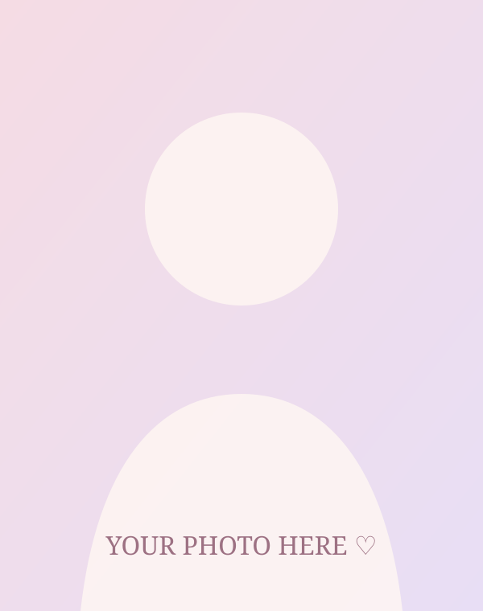

✿
YOUR NEXT STORY
Something lovely is coming
Upload your first work from the admin area.
A LITTLE SPACE OF CREATIVITY
Creative Student & Mandarin Learner
A little space where creativity grows, stories are captured, and new things are learned.

Halo! Aku Viola, biasa dipanggil Pio. Aku adalah siswa SMK jurusan Desain Komunikasi Visual yang senang mengeksplorasi hal baru, menangkap cerita melalui foto dan video, serta menuangkan ide menjadi karya visual.
Di luar dunia kreatif, aku juga suka memasak, makeup & beauty, dan belajar bahasa asing—terutama Mandarin. Bagiku, setiap pengalaman kecil bisa menjadi inspirasi untuk berkembang.
A collection of projects, experiments, and moments worth keeping.
Upload your first work from the admin area.
Finding stories in little details.
Keeping moments in motion.
Trying recipes and making something warm.
Learning new words and perspectives.
Exploring creativity through details.
OSIS / Media Sekolah · MC Sekolah · Tim Fotografi · Tim Videografi & Dokumentasi
Belajar mengenal alur kerja studio dan pengalaman produksi visual.
Every skill starts with curiosity. These are part of my learning journey.
For creative projects, collaborations, or just a little hello.
Your thoughts, suggestions, and little messages are always welcome.
Welcome back, Viola!